Frühstück, Mittagstisch, selbst gebackene Kuchen und Kaffee aus der Siebträgermaschine. Täglich frische Küche in der Wohlfühloase der Stadtmitte.
„Café Kontor ist eines der besten Cafés in NRW."Falstaff-Umfrage, Top 15
„Top 10 der Frühstückscafés im Rheinland."Rheinische Post
„Dieser Ort gehört ganz sicher zu den schönsten in der Stadt, um Koffein zu tanken."Kölner Stadt-Anzeiger
Gründerzeit-Portal, hohe Fenster, die alten Schließfächer: Das Bankhaus am Adenauerplatz hat Geschichte, und heute den besten Platz für eine Kaffeepause.
Wie das Bankhaus selbst kann auch das Café Kontor auf eine Erfolgsgeschichte verweisen: kleines Café mit besonderer Atmosphäre, liebevollem Service und täglich frischer Küche, egal zu welchem Anlass.
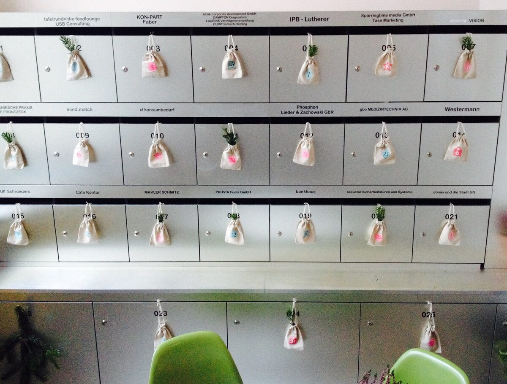
Liebevoll zubereitete Frühstücksvarianten, Mittagstisch, selbst gebackene Kuchen mit Dinkelmehl und Kaffeespezialitäten aus der Siebträgermaschine, dazu Chai Latte mit hausgemachtem Gewürzsirup. Vegane Optionen inklusive. Die Original-Karten zum Reinlesen:
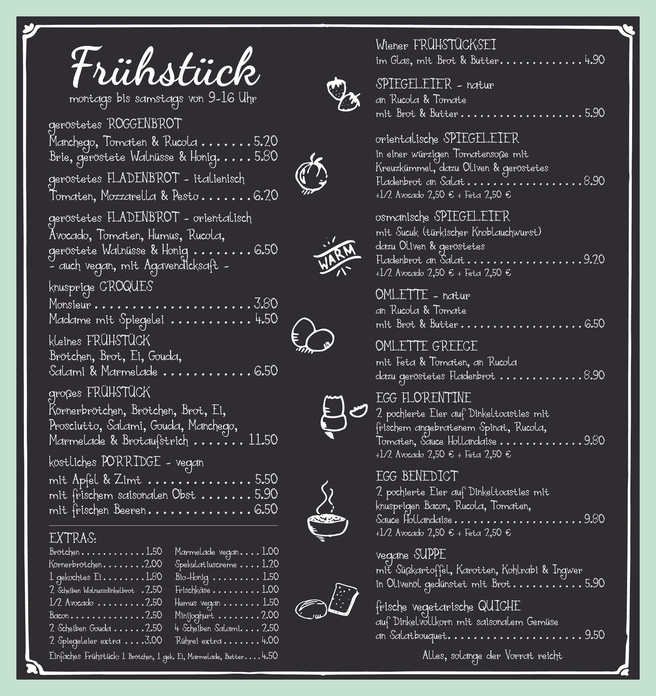
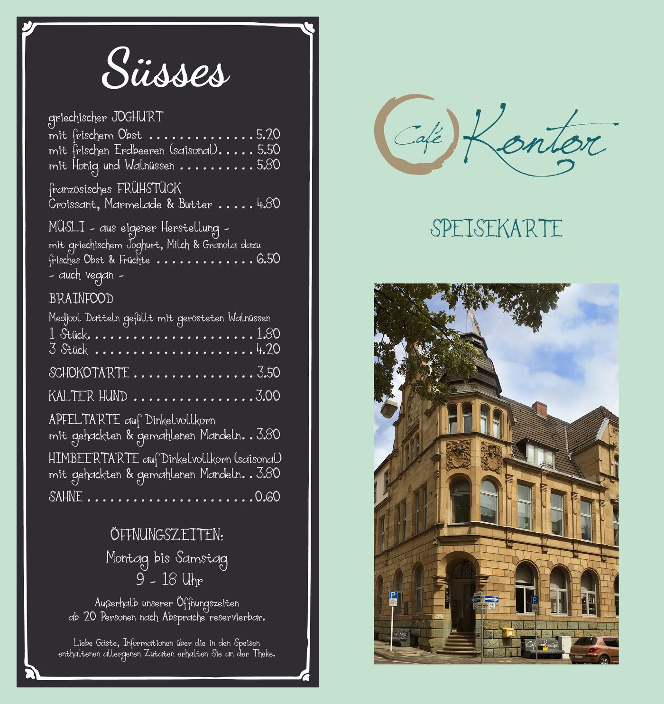
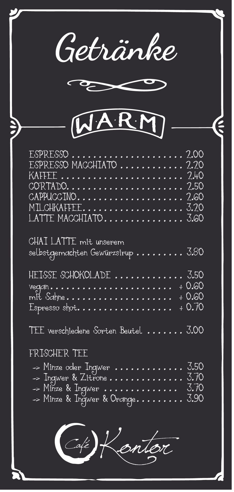
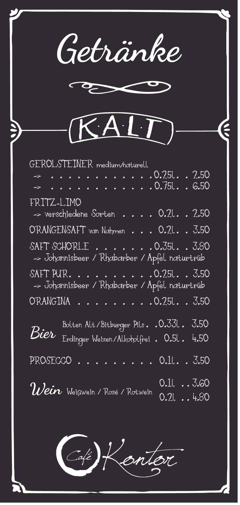
„Schon beim Betreten herrscht eine Atmosphäre der Behaglichkeit und Herzlichkeit."
„Sehr uriges Ambiente mit riesigen Fenstern. Kuchen alles mit Dinkelmehl gebacken, Personal äußerst nett."
„Kurz: Geheimtipp. Gleich beim Betreten macht sich eine gastfreundliche Gemütlichkeit breit."
Aus echten Google-Rezensionen · alle ansehen
Der angeschlossene Konferenzsaal bietet Platz für private und geschäftliche Termine und Feiern mit bis zu 30 Personen, kulinarisch betreut aus der eigenen Küche: vom Sektempfang über Fingerfood-Platten bis zur langen Kaffeetafel.
Saal anfragen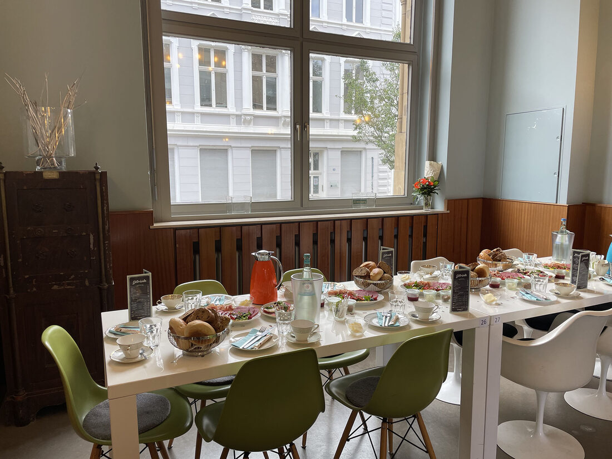
Ob Flohmarkt, Konzert oder Coffee & Beats: Im Kontor gibt es regelmäßig Veranstaltungen, die aus dem Café mehr machen als ein Café. Auch der Junggesellinnenabschied und die Familienfeier finden hier ihren Rahmen.
Was als Nächstes ansteht, erfahrt ihr auf Instagram und Facebook.
Neue Veranstaltungen, Tagesangebote und Einblicke gibt es auf Instagram.
@cafe_kontor folgen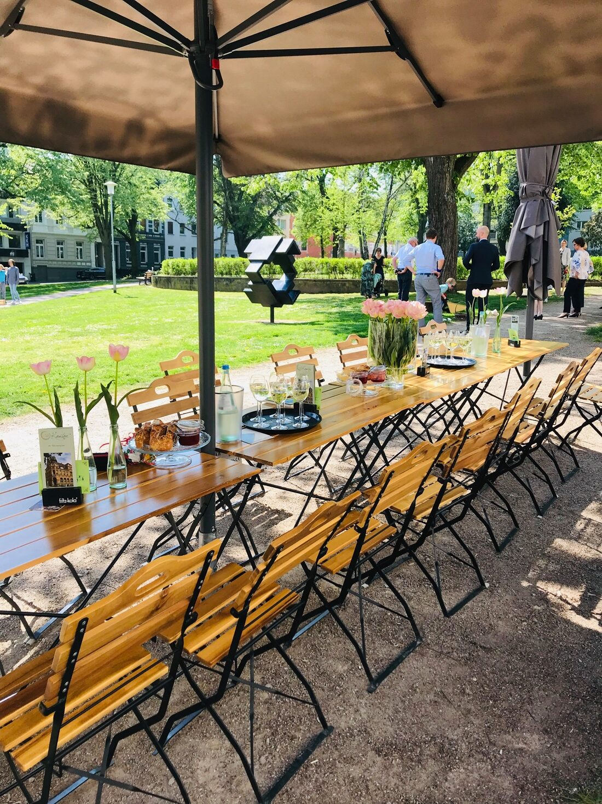
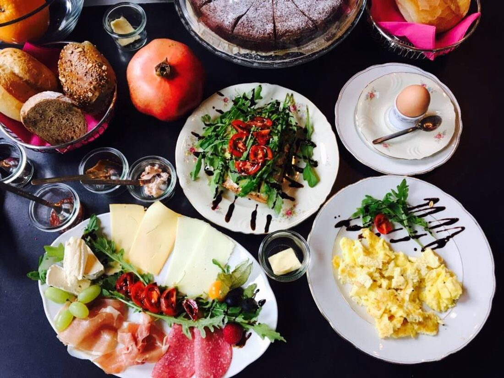
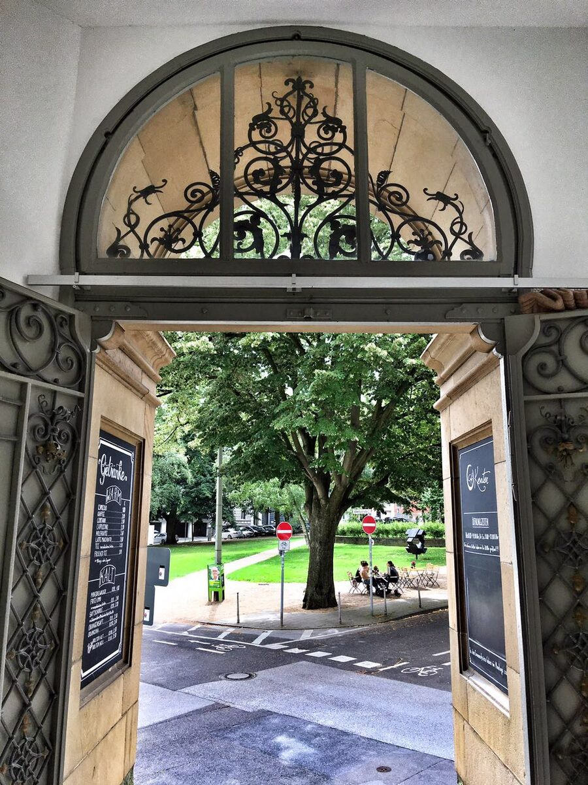
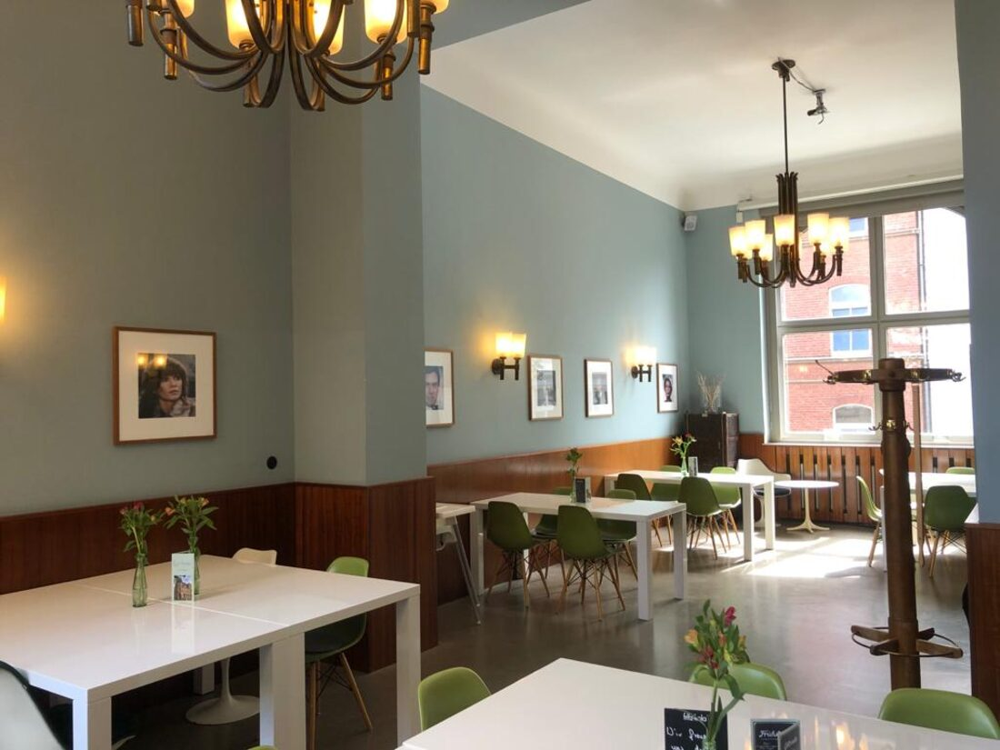
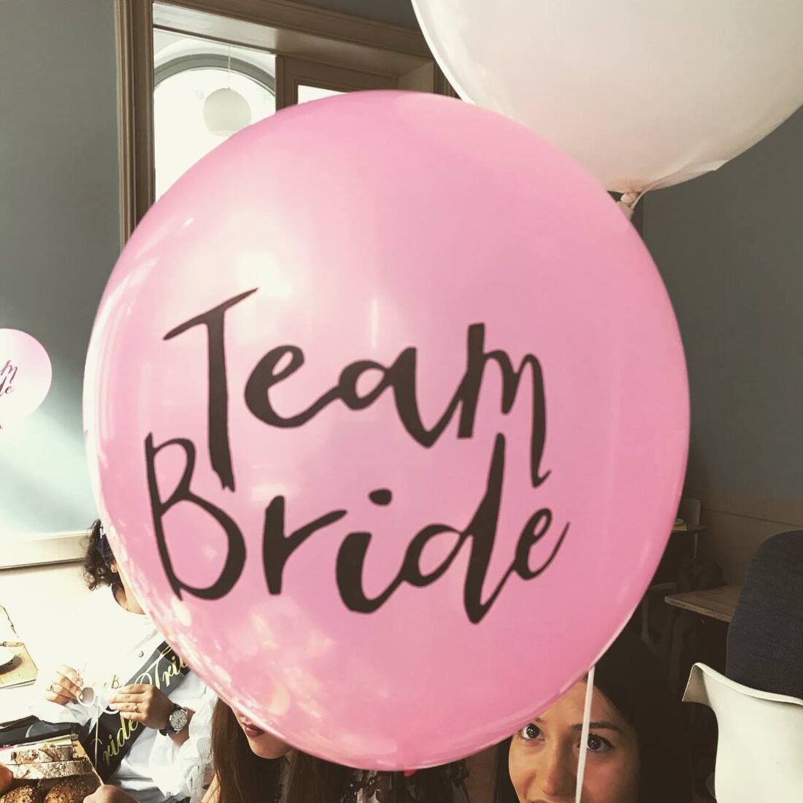
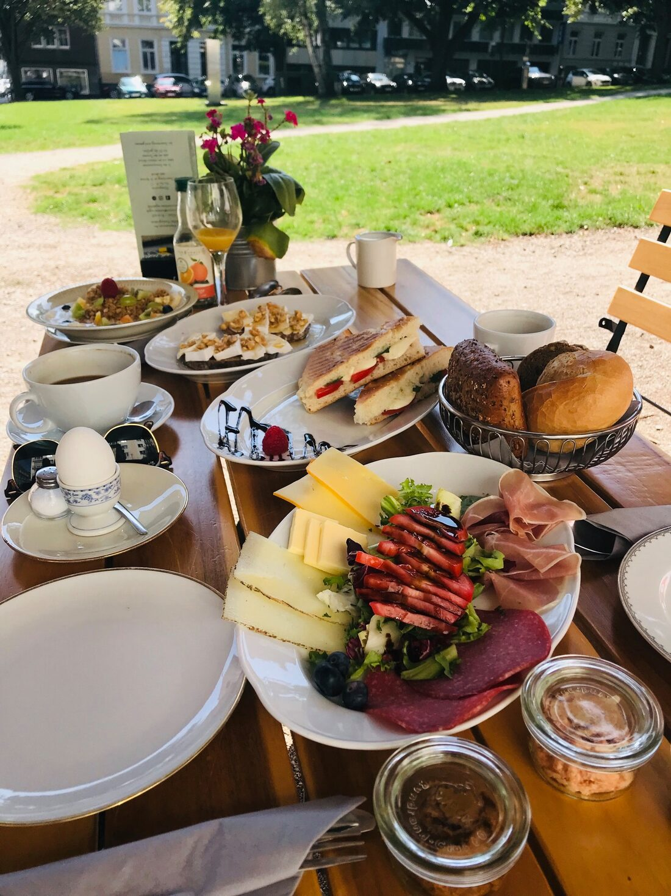
Tisch, Geburtstag oder Konferenzsaal: Am schnellsten geht es telefonisch. Wir freuen uns auf Sie.